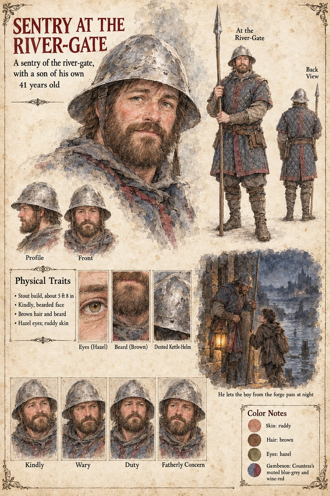

Sentry at the River-Gate
A sentry of the river-gate, with a son of his own · unnamed · 41 years old
A stout, kindly, bearded man of forty-one, about 5 ft 8 in, with brown hair and beard, hazel eyes, ruddy skin, a dented kettle-helm, a spear and a quilted gambeson in the Countess's colours, muted blue-grey and wine-red. The river-gate is the gate whose seal is on the plain gold ring King Theudebald gives Ansbert, and which Sigebert Marl will follow the hawker to and no farther. The sheet's tagline, A sentry of the river-gate, with a son of his own, is the whole of what it says about the man; the publication notes add that he lets the boy through at night having been told that the boy is “a sort of lucky piece” (Chapter 15).
Its scene, He lets the boy from the forge pass at night, draws him stooped with a lantern toward a small hooded boy with a pack, beside a dark river and a walled town with towers across the water. The sheet does not name the boy: on Brun's page the apprentice Lantfrid runs for the bridge on the Uncounted night, and this page does not say that the boy is he. The gambeson's colours are the sheet's own note, and the Countess is Adalgund, Countess of Eschwin; the sheet does not say whether the sentry is one of her levies, and Gerold's page has three barges of the Countess's levies come down under the north bank on the Uncounted Day.
His expression panels run Kindly, Wary, Duty and Fatherly Concern. Written from the sheet, from what the other Case 4181 pages already say, and from the character notes in the case's publication-prep file; the manuscript itself was not to hand. His age of 41, stout build, kindly bearded face, brown hair and beard, hazel eyes and ruddy skin are the sheet's own.